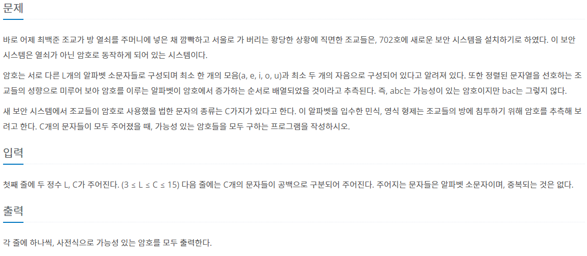
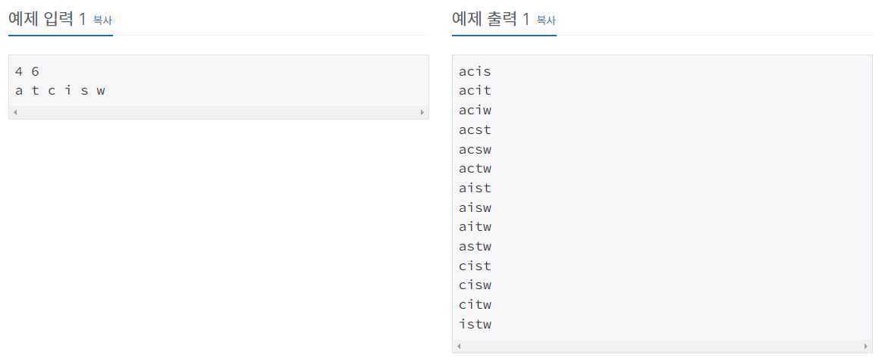
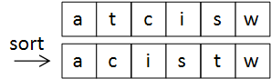
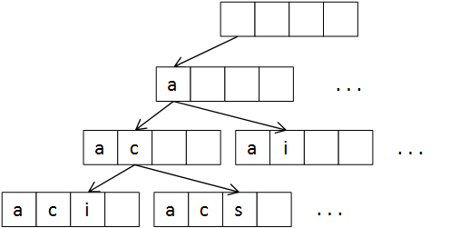

#INFO
난이도 : GOLD5
문제유형 : 백트래킹
출처 : 1759번: 암호 만들기 (acmicpc.net)
1759번: 암호 만들기
첫째 줄에 두 정수 L, C가 주어진다. (3 ≤ L ≤ C ≤ 15) 다음 줄에는 C개의 문자들이 공백으로 구분되어 주어진다. 주어지는 문자들은 알파벳 소문자이며, 중복되는 것은 없다.
www.acmicpc.net
 
#SOLVE
간단한 백트래킹 문제이다. 알파벳을 저장할 alpha 배열을 선언한 뒤, sort함수를 이용해 알파벳을 오름차 순으로 정렬한다.

다음으로 백트래킹 알고리즘을 이용하여 알파벳이 증가하는 순서로 출력되도록 설정하면 된다.

단, 암호는 서로다른 L개의 알파벳 소문자로 구성되며, 최소 한 개의 모음(a, e, i, o, u)과 최소 두 개의 자음으로 구성된다는 조건을 만족시키기 위하여 몇 가지 조건을 추가해야 한다. 예를들어 "acb"는 조건에 만족하지만 "cbd"는 조건에 위배된다.
따라서 파라미터로 들어온 알파벳이 모음(a, e, i, o, u)인지 판별하는 aeiou 함수를 선언하여 문제 풀이에 사용하였다.
// 알파벳이 모음(a, e, i, o, u)일 경우 true를 리턴한다.
bool aeiou(char ch){
if(ch == 'a' || ch == 'e' || ch == 'i' || ch == 'o' || ch == 'u'){
return true;
}
return false;
}#CODE
#include <bits/stdc++.h>
using namespace std;
char alpha[17];
int arr[17];
int l, c;
// 알파벳이 모음(a, e, i, o, u)일 경우 true를 리턴한다.
bool aeiou(char ch){
if(ch == 'a' || ch == 'e' || ch == 'i' || ch == 'o' || ch == 'u'){
return true;
}
return false;
}
void recur(int k, int st){
if(k == l){
bool flag = false;
int cnt1 = 0;
int cnt2 = 0;
for(int i = 0; i < l; i++){
if(aeiou(alpha[arr[i]])) cnt1++;
else cnt2++;
}
if(cnt1 >= 1 && cnt2 >= 2) flag = true;
if(flag){
for(int i = 0; i < l; i++){
cout << alpha[arr[i]];
}
cout << '\n';
}
}
for(int i = st; i < c; i++){
arr[k] = i;
recur(k+1, i+1);
}
}
int main(void) {
ios::sync_with_stdio(0);
cin.tie(0);
cin >> l >> c;
for(int i = 0; i < c; i++)
cin >> alpha[i];
sort(alpha, alpha + c);
recur(0, 0);
return 0;
}